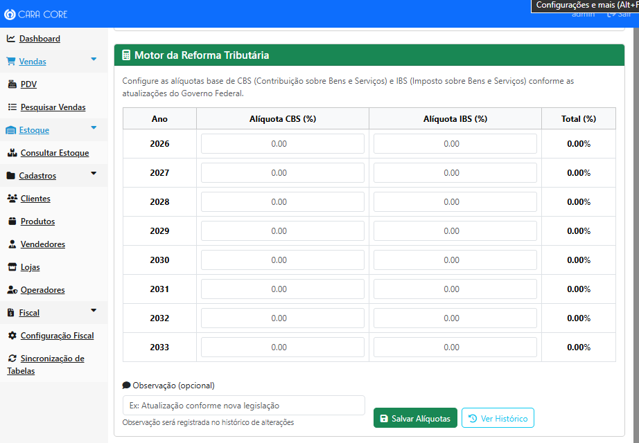
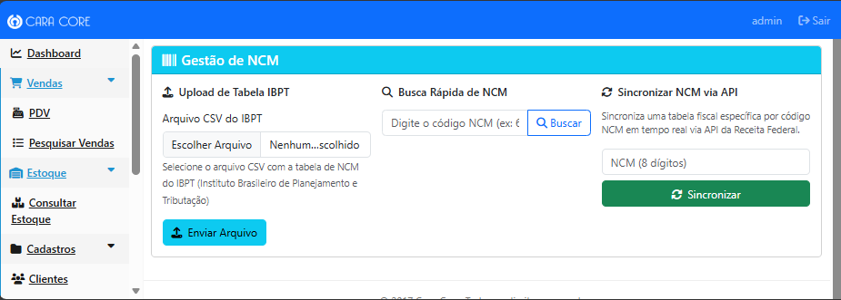
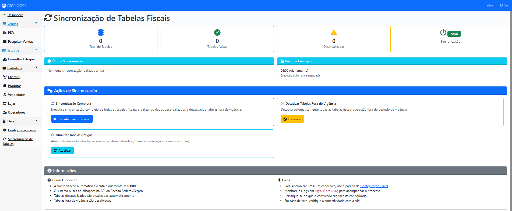
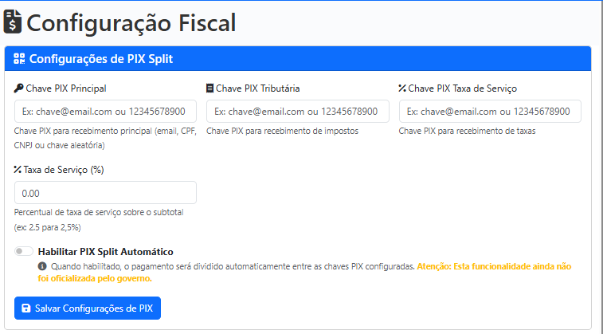

Índice do Guia
- 1. O que é a Reforma Tributária 2026-2033?
- 2. O que são CBS e IBS?
- 3. O que é NCM e para que serve?
- 4. Como funciona o cálculo de impostos?
- 5. Como usar a tela de Configuração Fiscal?
- 6. Como configurar as alíquotas?
- 7. Como fazer upload da tabela NCM?
- 8. Como buscar um NCM específico?
- 9. O que é PIX Split?
- 10. Como ver o histórico de alterações?
- 11. O que é o modo Offline-First (Antifrágil)?
- 12. O que é o modo de Contingência (SQLite + SMS)?
- 13. O que fazer quando o Governo fica fora do ar? (Guia de Bolso)
1 O que é a Reforma Tributária 2026-2033?
A Reforma Tributária é uma mudança na forma como o Brasil cobra impostos. Antes, existiam muitos impostos diferentes (ICMS, IPI, PIS, COFINS, etc.). A partir de 2026, esses impostos serão substituídos gradualmente por apenas dois impostos: CBS e IBS.
Imagine que você tinha que pagar várias contas diferentes todo mês (água, luz, telefone, internet, etc.). A Reforma Tributária é como se todas essas contas fossem unificadas em apenas duas contas mais simples.
⚠️ Importante: A mudança não acontece de uma vez. Ela vai ocorrer gradualmente de 2026 até 2033. Isso significa que as alíquotas (percentuais) dos impostos vão mudar a cada ano durante esse período.
Por que isso é importante para o seu negócio?
- Você precisa calcular os impostos corretamente para não ter problemas com a Receita Federal
- Os impostos afetam o preço final dos seus produtos
- Você precisa saber quanto de imposto está pagando para calcular seu lucro real
- O sistema CaraCore-PDV faz esses cálculos automaticamente, mas você precisa configurá-lo corretamente
2 O que são CBS e IBS?
CBS - Contribuição sobre Bens e Serviços
O CBS é um imposto federal. É como se fosse a "parte do governo federal" do imposto. Ele substitui os antigos PIS e COFINS.
Exemplo prático: Se você vende um produto por R$ 100,00 e a alíquota de CBS é 1%, você paga R$ 1,00 de CBS para o governo federal.
IBS - Imposto sobre Bens e Serviços
O IBS é um imposto estadual e municipal. É como se fosse a "parte dos estados e cidades" do imposto. Ele substitui o antigo ICMS.
Exemplo prático: Se você vende um produto por R$ 100,00 e a alíquota de IBS é 18%, você paga R$ 18,00 de IBS para o estado e município.
💡 Dica: Quando você soma CBS + IBS, você tem o total de impostos que precisa pagar sobre uma venda. Por exemplo: CBS 1% + IBS 18% = 19% de impostos totais.
3 O que é NCM e para que serve?
NCM significa "Nomenclatura Comum do Mercosul". É como se fosse um "CPF" para cada tipo de produto.
Cada produto tem um código NCM que identifica:
- O tipo de produto (se é alimento, eletrônico, roupa, etc.)
- A categoria do produto
- As características principais do produto
Por que o NCM é importante? O governo usa o NCM para saber qual alíquota de imposto aplicar em cada produto. Por exemplo, alimentos básicos podem ter uma alíquota diferente de produtos de luxo.
Exemplo de NCM:
NCM 2202.10.00 = Águas, incluindo águas minerais e águas gaseificadas, não adicionadas de açúcar ou outros edulcorantes
NCM 8517.12.00 = Telefones celulares
⚠️ Atenção: Você precisa ter o NCM correto de cada produto para que o sistema calcule os impostos corretamente. O NCM geralmente vem na nota fiscal do fornecedor ou você pode buscar no site da Receita Federal.
4 Como funciona o cálculo de impostos no sistema?
O sistema CaraCore-PDV calcula os impostos automaticamente quando você faz uma venda. Mas para isso funcionar, você precisa configurar algumas coisas primeiro.
Passo a passo do cálculo:
- Você cadastra um produto com seu NCM
- O sistema busca na tabela NCM qual é a alíquota correta para aquele produto
- O sistema pega as alíquotas base de CBS e IBS que você configurou para o ano atual
- O sistema calcula: Valor do produto × (Alíquota CBS + Alíquota IBS) = Total de impostos
- O sistema mostra no cupom quanto de imposto foi cobrado
Exemplo prático:
Você vende um produto por R$ 100,00
Alíquotas configuradas para 2026: CBS = 1% e IBS = 18%
Cálculo:
- CBS: R$ 100,00 × 1% = R$ 1,00
- IBS: R$ 100,00 × 18% = R$ 18,00
- Total de impostos: R$ 19,00
O cliente paga R$ 100,00, mas você precisa repassar R$ 19,00 em impostos para o governo.
5 Como usar a tela de Configuração Fiscal?
A tela de Configuração Fiscal é onde você configura tudo relacionado a impostos. Para acessá-la, você precisa estar logado como Administrador.
Como acessar:
- Faça login no sistema com usuário Administrador
- No menu lateral, clique em "Fiscal"
- Depois clique em "Configuração Fiscal"

Figura: Tela completa de Configuração Fiscal mostrando todas as seções principais
A tela de Configuração Fiscal tem 4 seções principais:
1. Configurações de Split
Onde você configura as chaves PIX para divisão de pagamentos (quando o PIX Split for oficializado)
2. Motor da Reforma Tributária
Onde você configura as alíquotas de CBS e IBS para cada ano (2026-2033)
3. Gestão de NCM
Onde você faz upload da tabela NCM e busca códigos específicos
4. Histórico de Alíquotas
Onde você vê todas as alterações que foram feitas nas alíquotas
6 Como configurar as alíquotas de CBS e IBS?
As alíquotas são os percentuais que o governo vai cobrar de imposto. Esses percentuais mudam a cada ano durante a Reforma Tributária (2026-2033).
Passo a passo:
- Acesse a seção "Motor da Reforma Tributária" na tela de Configuração Fiscal
- Você verá uma tabela com os anos de 2026 até 2033
-
Para cada ano, digite:
- A Alíquota CBS (em percentual, por exemplo: 1.00 para 1%)
- A Alíquota IBS (em percentual, por exemplo: 18.00 para 18%)
- O sistema calcula automaticamente o total (CBS + IBS) e mostra na última coluna
- Clique em "Salvar Alíquotas" para salvar as configurações

Figura: Tabela do Motor da Reforma Tributária com alíquotas de CBS e IBS por ano (2026-2033)
💡 Dica importante:
As alíquotas oficiais são divulgadas pelo governo. Você deve verificar no site da Receita Federal quais são os valores corretos para cada ano antes de configurar.
⚠️ Atenção:
O total de CBS + IBS não pode ultrapassar 100%. Se você ver a coluna "Total" ficando vermelha, significa que a soma está acima de 100% e você precisa corrigir os valores.
7 Como fazer upload da tabela NCM?
A tabela NCM é um arquivo que contém todos os códigos NCM e suas respectivas alíquotas de imposto. Esse arquivo é fornecido pelo IBPT (Instituto Brasileiro de Planejamento e Tributação).
Passo a passo:
-
Baixe o arquivo CSV do IBPT
- Você pode baixar no site do IBPT (geralmente é pago)
- Ou usar uma tabela fornecida pela Receita Federal
- Na tela de Configuração Fiscal, vá até a seção "Gestão de NCM"
- Clique em "Escolher arquivo" ou "Selecionar arquivo"
- Selecione o arquivo CSV que você baixou
- Clique em "Enviar Arquivo" ou "Upload"
- Aguarde o processamento - o sistema vai importar todos os códigos NCM

Figura: Seção de Gestão de NCM mostrando a opção de upload de arquivo CSV do IBPT

Figura: Opção alternativa de sincronizar NCM individual via API da Receita Federal
💡 Por que fazer upload da tabela NCM?
Quando você faz upload da tabela NCM, o sistema passa a "conhecer" todos os produtos e suas alíquotas. Assim, quando você cadastrar um produto com seu NCM, o sistema já sabe automaticamente qual imposto aplicar.
⚠️ Importante:
Você precisa fazer upload da tabela NCM pelo menos uma vez antes de começar a usar o sistema. E é recomendado fazer upload novamente quando houver atualizações na tabela (geralmente a cada 3 meses).
8 Como buscar um NCM específico?
Às vezes você precisa descobrir qual é o NCM de um produto ou verificar se um NCM está cadastrado no sistema.
Passo a passo:
- Na tela de Configuração Fiscal, vá até a seção "Gestão de NCM"
- Encontre o campo "Busca Rápida de NCM"
- Digite o código NCM que você quer buscar (por exemplo: 2202.10.00)
- Clique em "Buscar"
-
O sistema vai mostrar:
- Se o NCM foi encontrado
- A descrição do produto
- As alíquotas de imposto relacionadas
💡 Dica:
Se você não souber o NCM de um produto, você pode:
- Consultar na nota fiscal do fornecedor
- Buscar no site da Receita Federal
- Consultar um contador ou especialista fiscal
Figura: Campo de busca rápida de NCM na seção de Gestão de NCM
9 O que é PIX Split?
PIX Split é uma funcionalidade que ainda não está oficializada pelo governo, mas o sistema já está preparado para quando isso acontecer.
Como funcionaria o PIX Split:
Quando você recebe um pagamento via PIX, o dinheiro seria dividido automaticamente entre:
- Você (o vendedor) - recebe o valor da venda menos os impostos
- O governo (para impostos) - recebe automaticamente a parte dos impostos
- Taxa de serviço (se houver) - para intermediários de pagamento
⚠️ Status Atual:
O PIX Split ainda não está ativo porque o governo ainda não oficializou essa funcionalidade. Por enquanto, o sistema apenas calcula os impostos para você saber quanto vai pagar, mas não divide o pagamento automaticamente.
Como configurar (quando for oficializado):
- Na seção "Configurações de Split", você vai cadastrar as chaves PIX:
- Chave PIX principal (onde você recebe o dinheiro)
- Chave PIX para impostos (do governo)
- Chave PIX para taxa de serviço (se houver)
- Você pode ligar ou desligar o PIX Split usando um botão de toggle
- Quando ligado, o sistema divide automaticamente os pagamentos
- Quando desligado, o sistema apenas calcula os impostos (modo atual)

Figura: Seção de Configurações de PIX Split com campos para chaves PIX e toggle de ativação
10 Como ver o histórico de alterações?
O sistema guarda um histórico completo de todas as alterações que foram feitas nas alíquotas. Isso é importante para auditoria e para você saber quando e quem alterou cada configuração.
Como acessar o histórico:
- Na tela de Configuração Fiscal, clique no botão "Ver Histórico" na seção Motor da Reforma Tributária
- Ou acesse diretamente pelo menu "Fiscal" → "Histórico de Alíquotas"
- Você verá uma tabela com todas as alterações
Nota: A imagem do histórico será adicionada após a captura do screenshot.
O que você vê no histórico:
- Data e hora da alteração
- Quem fez a alteração (usuário)
- Qual ano foi alterado
- Valor antigo da alíquota
- Valor novo da alíquota
- Tipo de alteração (CBS ou IBS)
✅ Por que isso é útil:
O histórico ajuda você a:
- Saber quando as alíquotas foram alteradas
- Reverter alterações erradas (se necessário)
- Ter um registro para auditoria fiscal
- Entender quem fez cada alteração no sistema
11 O que é o modo Offline-First (Antifrágil)?
O modo Offline-First é uma arquitetura especial que garante que o sistema funcione perfeitamente mesmo quando a internet cai. Baseado nos princípios antifrágeis de Nassim Taleb, o sistema não apenas resiste a falhas, mas melhora com a adversidade.
Por que isso é importante?
Imagine que você está finalizando uma venda importante e, de repente, a internet cai. Com um sistema tradicional, você perderia a venda ou teria que anotar manualmente e digitar depois.
Com o modo Offline-First do CaraCore-PDV:
- ✅ A venda é salva imediatamente no computador local (banco de dados SQLite)
- ✅ Você recebe confirmação de que a venda foi realizada com sucesso
- ✅ O sistema continua funcionando normalmente, mesmo sem internet
- ✅ Backup ao encerrar e scripts de backup/restore (
docker/scripts/) e Centro de Segurança e Backup preservam os dados - ✅ Zero perda de vendas por falhas de rede
✅ Exemplo Prático: Se a internet cair durante um pagamento PIX de R$ 500,00, a venda é salva no SQLite local e o cliente recebe confirmação. O backup ao encerrar e os scripts de restore garantem que os dados fiquem preservados.
Como funciona?
1. Venda é finalizada: O sistema salva imediatamente no banco de dados local (SQLite).
2. Backup ao encerrar: Ao encerrar o PDV, o sistema faz backup automático do SQLite.
3. Scripts de backup/restore: Rotinas em docker/scripts/ permitem backup e restauração do banco.
4. Centro de Segurança e Backup: No painel administrativo, políticas de backup e retenção podem ser configuradas.
⚠️ Importante: O modo Offline-First precisa ser configurado durante a implantação do sistema. Consulte nossa equipe de consultoria para mais informações sobre como ativar essa funcionalidade.
Princípio Antifrágil
Nassim Taleb - Antifrágil:
"Amar o caos" - Sistemas antifrágeis não apenas resistem a choques, mas melhoram com eles. O CaraCore-PDV prospera quando enfrenta falhas de rede, garantindo que nenhuma venda seja perdida.
12 O que é o modo de Contingência (SQLite + SMS)?
O modo de Contingência é uma funcionalidade avançada que garante que o sistema nunca pare de vender, mesmo quando a internet cai completamente. Utiliza SQLite local + SMS via celular para reportar vendas críticas ao administrador.
O app pdv-sms-enviar, além do envio de SMS, recebe a licença Premium por SMS (CC-LICENSE ou CARACORE-KEY), expõe ao PDV o HardwareID e o estado da licença através de um ContentProvider, e na tela exibe o status da licença (Licença Gratuita/Inativa ou Licença Premium Ativa) e o botão Verificar Conexão USB.
Premium+ e LGPD: a integração Android (SMS) faz parte do Premium+ e requer configuração na implantação (visita técnica). O celular dedicado fica conectado ao Windows (USB/ADB) e o uso de SMS deve respeitar consentimento e procedimentos compatíveis com a LGPD.
Por que isso é importante?
Imagine que você está em uma loja movimentada e, de repente, a internet cai completamente. Com um sistema tradicional, você teria que parar todas as vendas e esperar a internet voltar.
Com o modo de Contingência do CaraCore-PDV:
- ✅ O sistema continua vendendo normalmente, mesmo sem internet
- ✅ Todas as vendas são salvas em um banco de dados local (SQLite)
- ✅ Um SMS é enviado automaticamente para o administrador com resumo da venda
- ✅ O administrador recebe notificação imediata mesmo sem internet no PDV
- ✅ Backup do SQLite e scripts de backup/restore (
docker/scripts/) preservam os dados - ✅ Zero perda de vendas - o sistema nunca para de funcionar
✅ Exemplo Prático: Se a internet cair durante uma venda de R$ 1.500,00 no PIX,
a venda é salva no SQLite local, um SMS é enviado para o administrador com a mensagem:
#V|LOJ:1|VAL:1500.00|MET:PIX|TS:1430|CHK:15.
O backup do SQLite e os scripts de restore garantem a preservação dos dados.
Como funciona?
1. Sistema detecta falta de internet: Após 3 tentativas falhadas de conexão, o sistema entra em modo contingência.
2. Banner aparece na tela: Um banner discreto informa: "Modo de Contingência Ativo: Operando via Link de Celular".
3. Venda é finalizada: A venda é salva imediatamente no banco SQLite local (persistido em volume Docker).
4. SMS é enviado automaticamente: Um SMS compacto (160 caracteres) é enviado para o administrador via celular conectado (ADB).
5. Backup e restore: O backup do SQLite e os scripts em docker/scripts/ preservam os dados; o Centro de Segurança e Backup permite configurar políticas de retenção.
Protocolo de Mensagem SMS
O sistema envia mensagens SMS compactas de até 160 caracteres com todas as informações essenciais:
#V|LOJ:1|VAL:150.50|MET:PIX|TS:1430|CHK:15
O que significa cada parte:
#V- Prefixo indicando que é uma VendaLOJ:1- ID da loja onde a venda foi realizadaVAL:150.50- Valor total da venda (R$ 150,50)MET:PIX- Método de pagamento (PIX, DIN, CRD, etc.)TS:1430- Horário da venda (14:30)CHK:15- Checksum para validar integridade da mensagem
Onde fica o banco SQLite?
O banco SQLite é criado automaticamente em diferentes locais dependendo de como você está executando o sistema:
- Desenvolvimento Local:
./data/caracore-pdv-contingency.db(na pasta do projeto) - Docker:
/data/caracore-pdv-contingency.db(dentro do volume Docker)
Em Docker (Produção): O banco SQLite é persistido em um volume Docker, garantindo que os dados sejam mantidos mesmo após reinicialização ou remoção de containers.
- Volume Docker:
sqlite_datamontado em/data/dentro do container - Persistência: Dados persistem após
docker-compose down - Backup: Scripts de backup/restore incluídos (
docker/scripts/) - Configuração: Automática via
docker-compose.yml - Criação Automática: O diretório
data/e o arquivo.dbsão criados automaticamente na primeira venda em modo contingência
⚠️ Requisitos: Para usar o modo de contingência, você precisa de:
- Dispositivo Android conectado via USB (para envio de SMS)
- ADB (Android Debug Bridge) instalado no servidor
- Número de telefone do administrador configurado
- Docker configurado (para persistência do SQLite)
⚠️ Importante: O modo de Contingência precisa ser configurado durante a implantação do sistema. Consulte nossa equipe de consultoria para mais informações sobre como ativar essa funcionalidade.
Princípio de Contingência
Princípio de Contingência:
"Nunca pare de vender" - O sistema reporta dados vitais mesmo sem internet através de SMS via celular conectado. Baseado nos princípios antifrágeis, o sistema não apenas resiste a falhas, mas garante operação contínua.
13 O que fazer quando o Governo fica fora do ar?
Guia de Bolso — CaraCore-PDV v1.0.13
O CaraCore-PDV foi feito exatamente para esse momento: quando o servidor da Fazenda (SEFAZ) fica fora do ar, demora para responder ou a internet da loja cai.
O que acontece no sistema?
- Antes de cada venda, o PDV verifica se a SEFAZ está acessível (em poucos segundos).
- Se o servidor do Governo não responder, o sistema ativa sozinho o Modo de Segurança (contingência).
- Suas vendas continuam normais. O cupom sai na hora, com os dizeres legais de contingência e o QR-Code para o consumidor consultar a nota depois.
- As notas ficam guardadas com segurança e são enviadas automaticamente à SEFAZ quando o sinal voltar.
O que você deve fazer?
- Continuar vendendo. O fluxo de venda não para.
- Entregar o cupom ao cliente (com aviso de contingência e QR-Code).
- Não se preocupar com “erro 500” ou mensagem técnica — se aparecer Modo de Segurança, o sistema está cuidando de tudo.
- Opcional: na Gestão Fiscal, ver quantas notas estão “em espera” e usar “Transmitir agora” quando a internet voltar.
Instabilidades nos servidores governamentais são externas ao software. O sistema oferece mecanismos legais de contingência para a operação não parar. Consulte a documentação de Contingência Offline (tpEmis=9) e o Manual de Erros Fiscais.
O módulo fiscal do Desktop (Electron) inclui detector de conexão, fila de contingência em SQLite e retry automático; essa parte é coberta por testes automatizados (Vitest) no repositório. A documentação técnica sobre PIX e SEFAZ como infraestruturas externas está em PLUGINS_PIX_SEFAZ.md.
Perguntas Frequentes (FAQ)
P: Preciso configurar tudo isso sozinho?
R: Não necessariamente! A Cara Core Informática oferece serviços de consultoria especializada para ajudar você a configurar tudo corretamente. Saiba mais sobre nossos serviços →
P: Com que frequência preciso atualizar as alíquotas?
R: As alíquotas mudam anualmente durante a Reforma Tributária (2026-2033). Você deve verificar e atualizar no início de cada ano, ou sempre que o governo divulgar novas alíquotas.
P: E se eu errar alguma configuração?
R: Você pode sempre corrigir! Basta acessar a tela de Configuração Fiscal novamente e alterar os valores. O sistema guarda o histórico de todas as alterações, então você pode ver o que foi alterado e quando.
P: O sistema calcula os impostos automaticamente nas vendas?
R: Sim! Depois que você configurar as alíquotas e fazer upload da tabela NCM, o sistema calcula automaticamente os impostos em cada venda. Você só precisa garantir que os produtos estejam cadastrados com seus NCMs corretos.
P: Preciso ser contador para usar isso?
R: Não! Este guia foi feito justamente para pessoas que não são especialistas em tributação. Mas se você tiver dúvidas complexas, é sempre recomendado consultar um contador ou usar nossos serviços de consultoria.
Precisa de Ajuda Profissional?
Nossa equipe de especialistas pode ajudar você a configurar tudo corretamente e garantir que seu sistema esteja sempre em conformidade com a legislação fiscal.